Europlugs
Europlugs (formally known as CEE 7/16 Alternative II) are small two-pin non-earthed plugs designed in the 1960s specifically to be compatible with every kind of socket present in continental Europe. They're rated at 2.5A, a result of the flexible pins used to ensure good contact on the different types of socket.
These types of plugs are the most common type found in Europe and other parts of the world; they're most often used on electronic devices such as power bricks, phone chargers and TVs, either moulded on cords or built into the devices themselves. Rewireable versions are also available, though their popularity is considerably lower than the moulded-on versions.
Standard Europlugs
Rating: 2.5A 250V
These are some standard types of Europlugs, as found on power cords for appliances, phone chargers and power bricks. The introduction of this standard has enabled an impressive amount of cross-compatibility, reducing the number of country-specific power cords that needed to be produced.
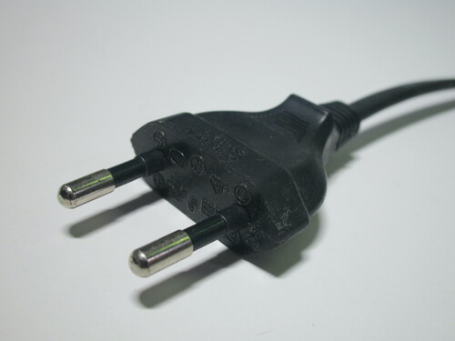 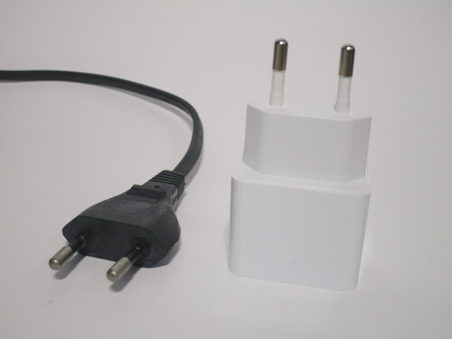{kind=link}
{kind=link}

Flat rewireable Europlug
Rating: 2.5A 250V
This Europlug is intended to be used in areas with little space, for example with sockets hidden behind pieces of furniture. As such, it protrudes very little from a socket, less than a centimetre. A CEE 7/7 (Schuko-French hybrid plug) version of this is also available from the same manufacturer.
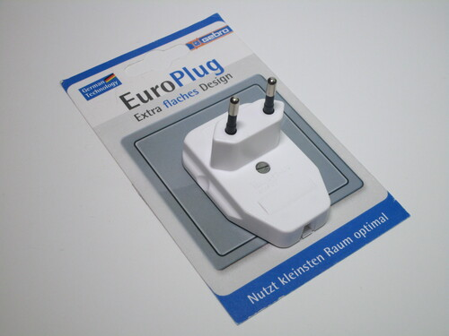 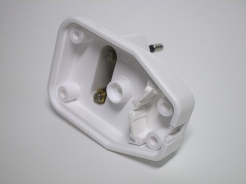 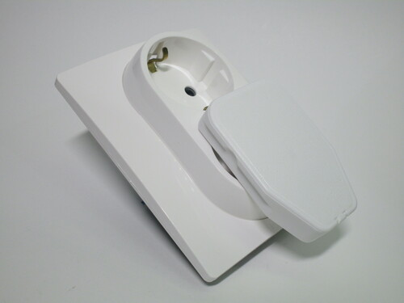{kind=link}
{kind=link}
{kind=link}
Rewireable 6A plug
Rating: 6A 250V
Aside from rewireable Europlugs, there are several manufacturers producing Europlug-shaped plugs with a higher current rating. This is an example of one - it looks and functions exactly like a normal Europlug, but is rated for 6A. Similar plugs can also be found on travel hairdryers, as they require a considerable amount of current.
An interesting feature of this specific one is the way it's opened: the outer shell has a hole that the head of the screw slots into. Thus, when the screw is tightened, the head isn't in the slot anymore and the internals of the plug can slide out.
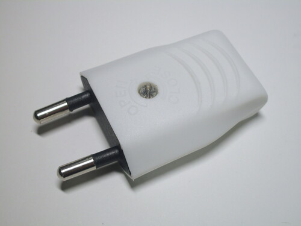 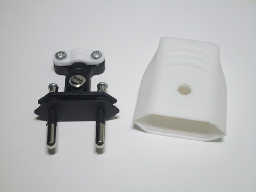 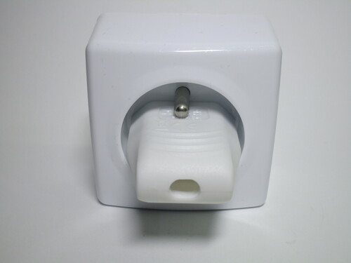{kind=link}
{kind=link}
{kind=link}
Adaptors for 2x and 4x Europlugs
Rating: 250V
These adaptors convert a Schuko, French or non-earthed socket (using a CEE 7/17 plug) into a number of Europlugs, useful when plugging in several devices at once. Different styles are available, with 2, 3 or 4 sockets.
Two models are shown here: the first one only has 2 sockets, and has a clever design that allows for connection of several adaptors next to each other on a power strip. The second one is larger, with 4 sockets, and has a power switch.
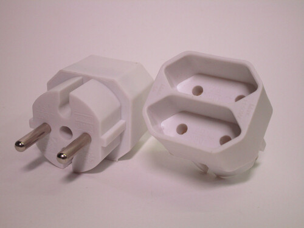 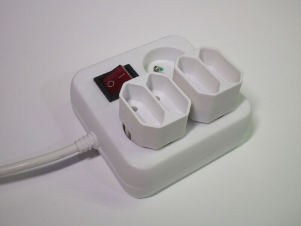 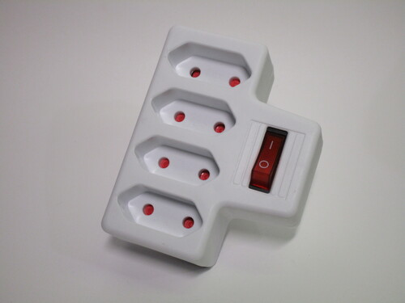{kind=link}
{kind=link}
{kind=link}
TEM Europlug socket
Rating: 10A 250V
The CEE 7/16 standard doesn't specify any sort of standard for a socket, as the ones already present in a country are sufficient. Nevertheless, some companies have produced sockets specifically intended to be used with this type of plug.
This is an example of one of them, made by the Slovenian company TEM as part of their modular "Modul" series. It's very clearly derived from a 16A Italian Bipasso socket module, including a hole where an earth terminal would have gone.
It might seem strange that anyone would need such a socket, but they can legitimately be useful, for example on home theatre setups where a lot of Europlugs have to be plugged in.


Europlug extension cord
Rating: 2.5A 250V
Extension cords for Europlugs are also available. This specific one is 5 metres long and uses a 0.75mm2 cord.
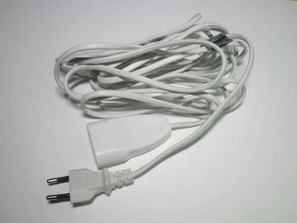{kind=link}
 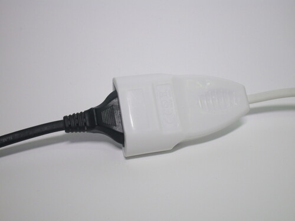
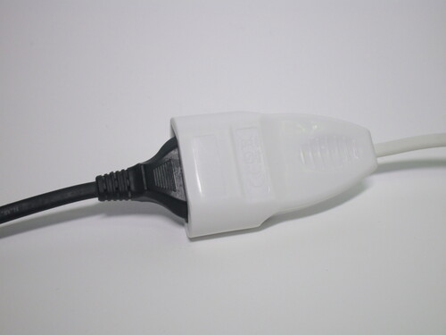
{kind=link}
Europlug power strip
This thin power strip was specifically designed to be useful in places where little physical space is available, such as behind furniture. It has four Europlug sockets and a CEE 7/17 contour plug instead of a Schuko one, since an earth connection isn't needed in this case.
The plug has a very strange design, with the cord coming out of the side and a slightly flexible ring to help disconnect it from the socket. The side-entry cord makes it possible to use this with a socket hidden behind furniture, with very little clearance for the cable.
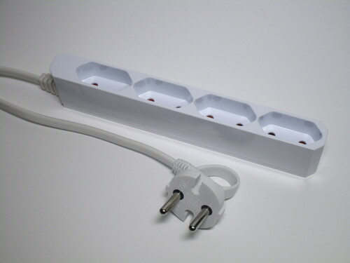 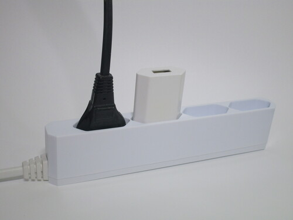 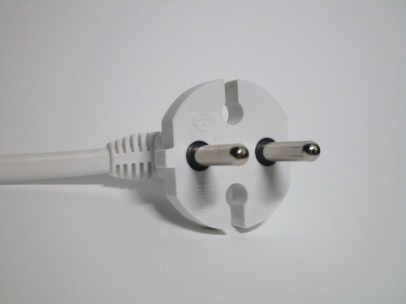{kind=link}
{kind=link}
{kind=link}